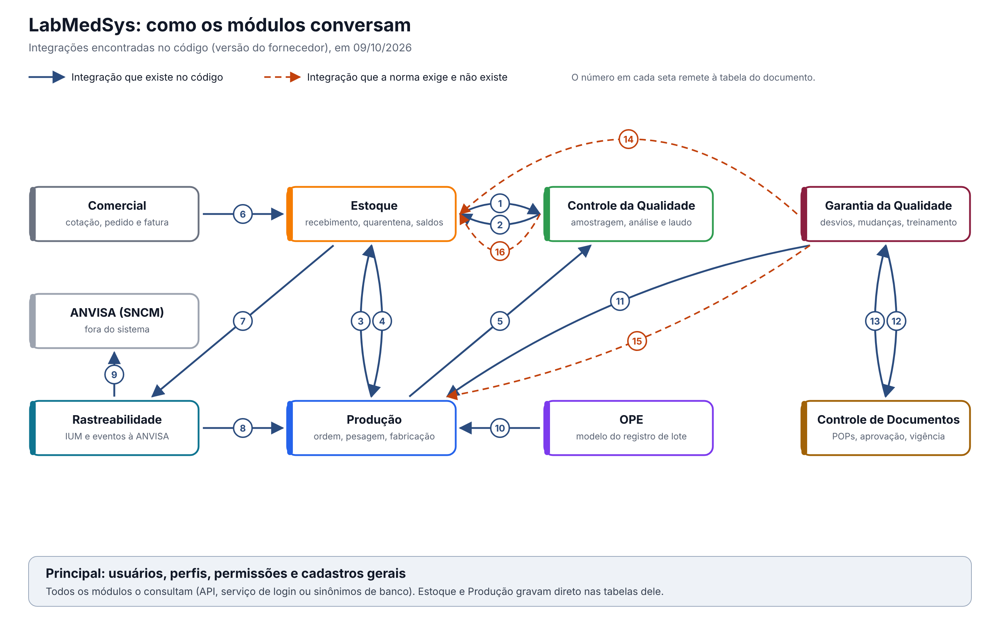

Uso interno. Mapa das integrações entre os nove módulos do LabMedSys, na versão entregue pelo fornecedor: o que cada módulo envia para outro ou busca em outro, e por qual meio. Levantado no código em 09/10/2026, por scripts e pela leitura dirigida das classes de integração. Nada aqui foi testado nas telas, exceto o pedido de análise do Estoque ao Controle da Qualidade (CQ), que falhou no teste do endereçamento (DV-EST-016).
O mapa

Como ler: cada caixa é um módulo; cada seta azul é uma integração que existe no código, no sentido de quem pede para quem atende; cada seta vermelha tracejada é uma integração que as Boas Práticas exigem e o sistema não tem. O número de cada seta remete à tabela abaixo. O Principal aparece como uma faixa embaixo porque todos os módulos o consultam.
O ciclo do lote, em palavras
Como foi montado: cada passo vem de uma chamada encontrada no código (a seta citada, com a evidência na tabela abaixo). A ordem dos passos é uma montagem nossa, a partir da tela em que cada chamada acontece; o código não descreve o processo de ponta a ponta. Nada foi testado nas telas, exceto a abertura da análise no recebimento (passo 2), que falhou (DV-EST-016). Falta validar a sequência com as áreas.
- Compra e recebimento. A compra e o recebimento da nota fiscal ficam no próprio Estoque (fluxos de compras e de recebimento); não há integração com outro módulo nesta etapa. O Comercial (seta 6) trata da venda, não da compra: ver o passo 6.
- Quarentena e análise. Ao endereçar o lote recebido, o Estoque abre a solicitação de análise no CQ (seta 1), desde que o CQ esteja habilitado na configuração de módulos. O CQ pede ao Estoque a separação da amostra e não deixa seguir a análise enquanto ela não for separada ("Solicitação referente a amostra aguardando pesagem/separação.", seta 2).
- Liberação. Ao emitir o laudo, o CQ grava o resultado só no próprio banco. O lote sai da quarentena quando alguém atualiza a análise na tela do Estoque, que então busca o resultado no CQ (seta 1). Não encontramos rotina automática que faça isso; a confirmar no teste. A seta 16 marca o aviso que falta.
- Produção. Ao iniciar a produção, a Produção consulta o saldo dos insumos; reserva os insumos e, na pesagem, lê o que o Estoque separou (seta 3). Nas etapas de processo, abre análises de granel e semielaborado no CQ (seta 5). O modelo do registro de lote vem do OPE (seta 10).
- Produto acabado. No fim da produção, a Produção envia o produto acabado ao Estoque (seta 3). Na entrada do produto acabado, o Estoque abre a análise no CQ (seta 1;
3.estoque/app/LaboSys_BLL/bllEntradaProducao.cs:161); o estudo de estabilidade é aberto numa tela do almoxarifado do CQ, dentro do Estoque. Antes de movimentar o produto acabado em quarentena, o Estoque pergunta à Produção se a ordem foi liberada (seta 4). - Venda e rastreabilidade. O Comercial consulta os lotes disponíveis para venda, reserva o saldo do pedido e, ao faturar, gera a remessa no Estoque (seta 6). O Estoque envia os eventos de entrega e recebimento à Rastreabilidade (seta 7), que gera os códigos únicos (IUM) a partir dos produtos da Produção (seta 8) e os transmite à ANVISA (seta 9).
- Qualidade. A Garantia da Qualidade (GQ) só consulta: produtos e lotes na Produção (seta 11) e documentos no Controle de Documentos (seta 12). O Controle de Documentos consulta na GQ quem foi treinado em cada documento (seta 13). Nenhuma decisão da GQ chega ao Estoque ou à Produção (setas 14 e 15).
As integrações, uma a uma
Caminhos relativos à raiz do repositório.
| Nº | De → Para | O que trafega | Meio | Evidência |
|---|---|---|---|---|
| 1 | Estoque → CQ | Abre a solicitação de análise de cada lote em quarentena, ao endereçar o lote recebido (só se o CQ estiver habilitado na configuração de módulos); busca o resultado do laudo (aprovado, reprovado, validade) quando o usuário atualiza a análise na tela; abre o acompanhamento de estabilidade do produto acabado; lê os tipos de item de análise | API | 3.estoque/app/LaboSys_BLL/bllNotaFiscal.cs:293-300; 3.estoque/app/LaboSys_BLL/bllAnaliseControle.cs:543, :640, :878; 3.estoque/app/LaboSys_UI/estoque/analise_controle_ed.aspx.cs:295 |
| 2 | CQ → Estoque | Pede a separação da amostra (rotina e regulatória: retenção, referência, estabilidade); confere se a amostra já foi separada, e sem isso a análise não segue; pede reanálise do lote; lê almoxarifados e lotes | API | 4.controle_qualidade/app/HSolutions.CQ.Services/Estoque/SolicitacaoEstoque.cs:19, :50, :84, :154; 4.controle_qualidade/app/HSolutions.CQ.UI/Areas/Analise/Controllers/AnaliseProgramadaController.cs:215-222 |
| 3 | Produção → Estoque | Consulta o saldo dos insumos no início da produção; cria, confirma e cancela a reserva de insumos; na pesagem, lê os lotes separados; envia o produto acabado para entrar no Estoque | API, serviço SOAP e gravação direta no banco do Estoque (uma cópia das regras do Estoque dentro da Produção) | 2.producao/app/LaboSys.Producao.Services/Estoque/EstoqueService.cs:24, :41; 2.producao/app/Integracao_Producao_Estoque/bllItemIntegracao.cs:210, :351 |
| 4 | Estoque → Produção | Antes de movimentar o produto acabado em quarentena, pergunta se a ordem de produção foi liberada; lê as autorizações de saída de insumo e grava a confirmação da separação | Microsserviço e acesso direto ao banco da Produção | 3.estoque/app/LaboSys_BLL/bllAnaliseControle.cs:1026; 3.estoque/app/LaboSys_DAL/dalAutorizacaoEstoqueProducao.cs:11, :85 |
| 5 | Produção → CQ | Abre análises em processo (granel e semielaborado) por etapa da ordem e consulta a situação delas | API | 2.producao/app/LaboSys.Producao.Services/CQ/CqService.cs:37-47; 2.producao/app/LaboSys_UI/producao/XML/Class_Producao/SubEtapaProducao.cs:796 |
| 6 | Comercial → Estoque | Consulta itens, lotes disponíveis para venda (com validade mínima) e disponibilidade; cria, confirma e cancela a reserva do pedido; confere a separação e a liberação da fatura; ao faturar, gera a remessa (GMM) | API | 7.comercial/comercial/HSolutions.Comercial.Services/Estoque/EstoqueServiceApi.cs:320, :516, :864; 3.estoque/app/LaboSys_UI/Api/EstoqueController.cs:571-601 |
| 7 | Estoque → Rastreabilidade | Envia os eventos de entrega e de recebimento (por IUM ou por agregação) para declarar à ANVISA; confere se os IUM existem | Microsserviço | 3.estoque/app/LaboSys_BLL/bllEventoAnvisa.cs:156, :227, :291, :354, :411 |
| 8 | Rastreabilidade → Produção | Busca produtos (registro e descrição) para gerar os IUM | API | 8.rastreabilidade/app/HSolutions.Rastreabilidade.Services/Producao/ProdutoService.cs:26 |
| 9 | Rastreabilidade → ANVISA | Transmite os eventos (produção, entrega, recebimento, finalização) ao sistema da ANVISA (SNCM), por uma fila de mensagens e um serviço que envia | Microsserviço e fila de mensagens | 8.rastreabilidade/app/HSolutions.Rastreabilidade.Domain.Services/AnvisaHelper.cs:64-71; 8.rastreabilidade/app/HSolutions.Rastreabilidade.AnvisaWindowsService/BootstrapWindowsService.cs:27 |
| 10 | OPE → Produção | O OPE grava, por produto, o modelo do registro eletrônico de lote (XML); a Produção o lê para montar a ordem | Banco compartilhado (mesma tabela) | 9.ope/app/HSolutions.GeradorXML.ORM/Repository/GeradorXMLRepository.cs:21-32; 2.producao/app/LaboSys_DAL/dalProduto.cs:603 |
| 11 | GQ → Produção | Consulta produtos e lotes (para o desvio, a mudança e o registro na ANVISA) e itens de estoque, que a Produção repassa ao Estoque | API | 5.garantia_qualidade/app/HSolutions.GQ.Services/Producao/ProdutoService.cs:20; 5.garantia_qualidade/app/HSolutions.GQ.Services/Estoque/EstoqueService.cs:20-21 |
| 12 | GQ → Controle de Documentos | Consulta o documento (POP) pelo código | API | 5.garantia_qualidade/app/HSolutions.GQ.Services/Gdoc/DocumentoService.cs:23 |
| 13 | Controle de Documentos → GQ | Consulta os treinamentos: quem foi treinado em cada documento, programação e treinamentos finalizados | API | 6.controle_documento/app/HSolutions.ControleDoc.Infra.Service/Api/GarantiaQualidadeApi.cs:49, :116, :185 |
| 14 | GQ → Estoque | Falta: um desvio aberto sobre material ou produto deveria reter o lote; a qualificação do fornecedor deveria ser conferida no recebimento | — | RDC 658/2022, art. 8º, VI e IX; transversal/03-diagnostico-conformidade.md, temas 8 e 15 |
| 15 | GQ → Produção | Falta: a Produção deveria conferir, antes de produzir, se o registro do produto na ANVISA está válido e se o operador tem treinamento válido; a mudança aprovada deveria chegar à Produção | — | RDC 658/2022, arts. 39 a 46 e art. 8º, XII; diagnóstico, temas 16, 18 e 19 |
| 16 | CQ → Estoque | Falta: ao aprovar ou reprovar o laudo, o CQ deveria avisar o Estoque, que liberaria ou bloquearia o lote na hora. Hoje depende de alguém atualizar a análise na tela do Estoque | — | 4.controle_qualidade/app/HSolutions.CQ.UI/Areas/Analise/Controllers/EmissaoLaudoFinalController.cs:463 (só grava no CQ); art. 8º, XV |
O Principal (faixa de baixo)
| Módulo | O que busca no Principal | Meio |
|---|---|---|
| Estoque, Produção | Login e módulos habilitados; usuários, perfis, locais, pessoas jurídicas, que também gravam direto nas tabelas do Principal | Serviço de login (SOAP) e sinônimos de banco (Estoque 37, Produção 53) |
| CQ, GQ, Controle de Documentos, Comercial, Rastreabilidade | Usuários, funções, permissões, menu, áreas, equipamentos, ambientes, pessoas jurídicas, endereço por CEP | API |
| OPE | Ambientes usados no modelo do registro de lote | Microsserviço |
| Controle de Documentos → Principal | Envia avisos de eventos do documento (aprovação, vencimento) à central de notificações | API (6.controle_documento/app/HSolutions.ControleDoc.Infra.Service/Api/NotificacaoEventoApi.cs:82) |
| Principal → Controle de Documentos | A rotina noturna do Principal consulta a situação dos documentos para gerar os avisos | API (1.principal/app/LabMedSys.Principal.Service.Core/APIService/GdocService.cs:19); a rota no Controle de Documentos está comentada: a confirmar |
O que o mapa revela
| # | Achado | Por que importa |
|---|---|---|
| 1 | O Estoque é o centro do sistema: conversa com seis módulos | Uma falha nele, como a do endereçamento (DV-EST-016), para a quarentena, a análise no CQ e tudo o que vem depois |
| 2 | A liberação do lote não é automática. O CQ aprova o laudo e não avisa o Estoque; o lote só sai da quarentena quando alguém atualiza a análise na tela do Estoque (seta 16) | Lote aprovado pode ficar parado; o registro de quando o lote foi liberado depende de uma ação manual |
| 3 | A GQ é uma ilha: só consulta; nenhuma decisão sai dela (setas 14 e 15) | Desvio aberto, registro vencido e treinamento vencido não bloqueiam nada (diagnóstico, causa 3) |
| 4 | Há atalhos que passam por fora das APIs: a Produção grava direto no banco do Estoque com uma cópia das regras dele, e o Estoque grava direto no banco da Produção | Duas versões da mesma regra; uma correção numa não chega à outra; gravações sem a trilha do módulo dono do dado |
| 5 | Seis meios diferentes de integração: API, microsserviço, serviço SOAP, sinônimos de banco, banco compartilhado e fila de mensagens | Mais pontos de falha e de manutenção; a nova versão deveria padronizar |
| 6 | Integrações abandonadas no código: Estoque → Comercial (endereço do cliente, rota que não existe), CQ → GQ (endereço configurado e nunca usado), Rastreabilidade → Estoque (método nunca chamado) | Código morto, que confunde a manutenção |
Como deveria ser
- O dono do dado avisa: o CQ avisa o Estoque ao aprovar ou reprovar; a GQ avisa o Estoque ao abrir um desvio sobre um lote; o Estoque não deveria depender de alguém consultar.
- Decisões da qualidade viram travas: lote com desvio, produto sem registro válido e operador sem treinamento válido bloqueiam a etapa seguinte.
- Um só caminho por dado: cada módulo grava só no próprio banco; os outros usam a API dele.
- Um só meio de integração (API) e uma biblioteca comum para chamá-la.
Pontos para validar
- Qual versão da integração Produção → Estoque está em uso no ambiente: a API ou a cópia que grava direto no banco?
- No ambiente de teste, os módulos usam bancos separados ou um banco só? (Os arquivos de configuração do Estoque e do OPE apontam todos para o mesmo nome de banco.)
- A rotina noturna do Principal consegue ler a situação dos documentos? A rota no Controle de Documentos está comentada.
- O CQ está habilitado na configuração de módulos? Sem isso, o Estoque não abre a análise do lote recebido (seta 1). Pode explicar parte do DV-EST-016.
Atualização: o desenho é gerado por homologacao/ferramentas/gerar_mapa_integracoes.py a partir de transversal/04-mapa-de-integracoes.json. Ao analisar cada módulo, acrescentar ou corrigir as ligações no arquivo de dados e gerar de novo.